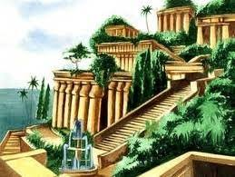
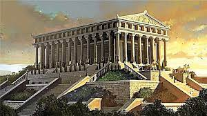
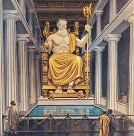
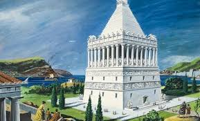
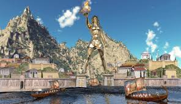
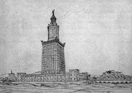

Ši piramidė yra seniausias iš septynių pasaulio
stebuklų ir vienintelis, išlikęs iki mūsų dienų.
Visa struktūra, kurios originalus aukštis buvo apie 146,6 m
ir kvadratinio pagrindo kraštinės ilgis 230,33 m, užima ~53 000
kvadratinių metrų plotą, yra pastatyta iš maždaug 2,3 mln.
akmens luitų. Piramidė statyta aukštyn mažėjančiais akmenimis.
Kai kurie pagrindo akmenys sveria iki 15 tonų. Sunkiausi
akmenys yra piramidės viduje, faraono Cheopso laidojimo patalpos lubose.
Spėjama, kad šį unikalų architektūrinį kūrinį statė
apie 120 000 žmonių, o statybos truko net 20 metų.
Kabantieji Babilono sodai

Kabantieji Babilono sodai
Kabantieji Babilono sodai - sodų kompleksas, pastatytas senovės mieste Babilone,
Eufrato pakrantėje. Šie sodai laikomi vienu iš senovės septynių pasaulio stebuklų, tačiau
iki šių dienų neišliko.
Manoma, kad šie sodai sukurti apie 600 m. pr. m. e. Pasak senovės graikų legendos,
sodai buvo sukurti, nes karaliaus Nabuchodonosaro II žmona Amytis
ilgėjosi savo gimtųjų namų Medijoje.
Kabantys sodai turėjo būti prie upės, kad lengviau būtų juos drėkinti.
Sodai buvo sukurti viena virš kitos buvusiose terasose, galėjusiose
siekti 40 m aukštį. Visas statinys turėjo piramidės formą, nes aukščiau
esančios terasos buvo mažesnės už žemiau esančias.
Artemidės šventykla

Artemidės šventykla
Artemidės šventykla - vienas iš septynių pasaulio stebuklų,
stovėjusių Efese (dabartinė Turkija). Pagal legendą Efesą
įkūrė amazonės – karingų moterų gentis. Paskutinė Artemidės
šventykla jame buvo statoma daug kartų.
Nežinoma, kaip ji buvo papuošta, kokios statulos joje stovėjo,
kokios buvo freskos ir kokie paveikslai, kaip atrodė pati
Artemidės statula. Visa, kas buvo padaryta, buvo sunaikinta.
Svarbiausią statinį rėmė 127 marmuro kolonų, kurių aukštis
siekė 20 metrų. Pastatas dekoruotas gražiomis skulptūromis
ir kitais papuošimais. Šventyklos viduryje pastatyta
Artemidės skulptūra.
Dzeuso skulptūra Olimpijoje

Dzeuso skulptūra Olimpijoje
Olimpija Senovės Graikijoje buvo svarbus religinis
centras, kuriame daugiausiai garbinamas dievas buvo
Dzeusas. Šiame mieste buvo rengiamos olimpinės
žaidynės, šventės ir atletikos varžybos.
V a. pr. m. e. Olimpijos gyventojai Dzeuso garbei
nusprendė pastatyti šventyklą, kuri iškilo 466–456 m. pr. m. e.
Ji buvo pastatyta iš masyvių akmens luitų ir supama kolonų.
Vėliau Bizantijos imperatoriai labai atsargiai pervežė statulą į Konstantinopolį, tačiau rūmai,
kuriuose ji buvo laikoma, sudegė gaisre ir iš statulos liko tik
keletas suanglėjusių kaulo plokštelių ir išsilydžiusio aukso gabalėlių.
Halikarnaso mauzoliejus

Halikarnaso mauzoliejus
Halikarnaso mauzoliejus – vienas iš septynių pasaulio stebuklų,
stovėjęs Mažojoje Azijoje, kurį Persų imperijos Karijos provincijos
satrapui Mauzolui (valdė 377–353 m. pr. m. e.) po mirties pastatydino
jo žmona ir sesuo Artemisija.
Mauzoliejų pastatė kalvos viršūnėje. Iš pradžių buvo pastatyta didelė
platforma, į kurios viršų vedė laiptai, išpuošti akmeniniais liūtais.
Ant platformos stūksojo pats kvadratinio plano antkapis, pastatytas
daugiausiai iš marmuro. Šią statinio dalį puošė reljefai, vaizduojantys
graikų mitologijos ir istorijos scenas. Piramidinį stogą puošė kvadriga:
keturi žirgai tempia kovos vežimą, kurį valdo Mauzolas ir Artemisija.
Rodo kolosas

Rodo kolosas
Rodo kolosas – milžiniška graikų Saulės dievo Helijo skulptūra,
stovėjusi Rodo saloje III a. pr. m. e.
Vidinę figūros konstrukciją sudarė iš akmens blokų pastatyti
bokštai, stovintys ant 15 metrų aukščio marmurinio postamento.
Į akmens blokus buvo įkalti geležies strypai, o prie jų tvirtinamos
bronzos plokštės, formuojančios skulptūros paviršių.
Darbas buvo baigtas per 12 metų – 282 m. pr. m. e. Statula
išstovėjo tik 56 metus, iki 226 m. pr. m. e., kai ją sugriovė žemės drebėjimas.
Aleksandrijos švyturys

Aleksandrijos švyturys
Aleksandrijos švyturys pastatytas III a. pr. m. e. Šis žinomiausias
pasaulio švyturys prastovėjo apie 1500 metų, kol
jį galutinai sugriovė žemės drebėjimas.
Švyturio paskirtis – padėti orientuotis laivams, plaukiantiems į
Aleksandrijos uostą – nulėmė ir statybos vietą – nedidelę
Faro salelę netoli Aleksandrijos (Egiptas).
Nors švyturys neišliko iki mūsų dienų, jo įtaka
vis dar jaučiama, nes jis tapo prototipu daugeliui
kitų švyturių, pastatytų Viduržemio jūros pakrantėse.